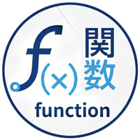

関数

- プロンプト例
JavaScriptの関数についてわかりやすく解説して
JavaScriptの関数とは？
関数は、一連の処理をまとめて名前を付けたものです。
function sayHello() { console.log("こんにちは"); }
これは、
「sayHello という名前の処理セット」
を作った、という意味です。
実行するには：
sayHello();
👉 () を付けると実行
なぜ関数を使うのか？
① 同じ処理を何度も書かなくていい
console.log("こんにちは"); console.log("こんにちは"); console.log("こんにちは");
⬇ 関数にすると：
function sayHello() { console.log("こんにちは"); } sayHello(); sayHello(); sayHello();
👉 短く・読みやすく・修正もしやすい
② 処理の意味がわかりやすくなる
calcTax(); openMenu(); closeModal();
👉 名前を見るだけで何をしているか直感的に分かる
基本構文（超重要）
function 関数名(引数) { 処理; return 戻り値; }
【例】
function add(a, b) { return a + b; } const result = add(3, 5); console.log(result); // 8
引数（ひきすう）とは？
関数に渡すデータ
function greet(name) { console.log("こんにちは " + name); } greet("花子"); greet("太郎");
【出力】
こんにちは 花子 こんにちは 太郎
👉 name は変数のような役割
return（戻り値）とは？
関数の処理結果を外に返す
function square(num) { return num * num; } const result = square(4); console.log(result); // 16
👉 return がない関数は 値を返さない
関数の3つの書き方（重要）
① function文（基本）
function test() { console.log("OK"); }
② 関数式
const test = function() { console.log("OK"); };
👉 変数に関数を代入
③ アロー関数（現代JSで超重要）
const test = () => { console.log("OK"); };
【短縮形】
const add = (a, b) => a + b;
👉 イベント処理・配列処理で頻出
実務でよく使う関数例
ボタンをクリックしたら処理を実行
const btn = document.querySelector('button'); btn.addEventListener('click', () => { alert("クリックされました"); });
👉 イベント処理はほぼ関数で書く
関数を理解するための重要ポイント
| 項目 | 意味 |
|---|---|
| function | 関数を作る |
| () | 実行する |
| 引数 | 関数に渡す値 |
| return | 結果を返す |
| アロー関数 | 現代JSの主流構文 |
初学者がつまずくポイント
① () を忘れて実行されない
test; // 実行されない test(); // 実行される
② return の意味が分からない
function test() { return 10; } const x = test(); // x = 10
👉 関数 = 値を生み出す装置
超重要な考え方
関数 = 処理の自動販売機
function vending(money) { return money >= 120 ? "ジュース" : "買えません"; }
vending(100); // 買えません vending(150); // ジュース